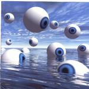

| Artist: | Sonus Umbra |
| Title: | Snapshots From Limbo |
| Label: | Lazarus Music CD-7275 |
| Length(s): | 61 minutes |
| Year(s) of release: | 2000 |
| Month of review: | {04/2001] |
| 1) | Ghosts From The Past | 2.38 |
| 3) | Seven Masks | 7.42 |
| 5) | Soul Dusk | 4.28 |
| 6) | The Eagle Has Landed | 4.19 |
| 7) | Erich Zann | 5.27 |
| 8) | A Season In Hell | 4.55 |
| 9) | Homo Homini Lupus | 7.45 |
Seven Masks is more like the intro to the album: dreamy vocals a bit in the style of Eric Woolfson, and mostly relaxed acoustic guitar. Slowly instruments are added or become more prominent, until also the rhythm and percussion guitar set in. Now the music has a dark sheen lying over it, with the drummer whacking away in varied fashion and the keyboards soloing. Very typical progressive. The drummer at times plays furiously. The acoustic guitar and vocals of the beginning returns.
Piano, percussion and acoustic guitar figure mostly on Demons. A rather nervous sounding track. This time Lisa Francis of Kurgan's Bane does some backing vocals. I was wondering already whether the somewhat monotonous vocals of the singer were due to him having that kind of voice or due to the production. My feeling is that mix/production could have been a bit cleaner and clearer. Powerful chords give the music again a darkish feel.
Soul Dusk is vocals, acoustic guitar and cosmic keyboards, with some very nice understated melodies. The vocals are still a bit dreary sounding and do not help the music much. The vocal melodies generally lose it to the instrumental melodies. A bit more attention should be paid there.
The Eagle Has Landed opens with Mark Kelly-like keyboard runs and tension is built up by the rhythm section. The spacey sounding vocals are again accompanied by Lisa Francis, but I still think this is the weakest part of the band and this track. The intermezzo features acoustic guitar.
Erich Zann continues the dark line of the album with lots of dark percussion and spooky guitar work. The melody lines are somewhat repetitive on this one, but it certainly does not bother.
In A Season In Hell we find little more than we have so far heard, but the vocalist sings a bit louder here and that does the song well. The penultimate track is the strongly classically Homo Homini Lupus (a werewolf) with its strong basswork and flowing acoustics. The vocals are extra hazy on this track. The pianic intermezzo is very strong and melodically this is one of the better tracks.
The final track is Insects and is by far the longest. The song opens with insects chirping, the dreamy-monotonous vocals return in both first parts at least. This second part has strong Floyd leanings, because of the darkish atmosphere and relaxed approach to the music. The bass presence is very strong on this second part, while the keyboards keep themselves at the back. During the louder parts of this second part I am more reminded from Eloy in halfway the eighties on Metromania, also because of the fact that Lisa Francis barges back in to do some backing vocals. The third and final part of the track is a tense piece of work with foreboden vocals and hammered piano.